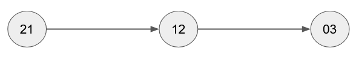

Eventos
Sequência
Numa rede PERT, as setas indicam o sentido e os números nos círculos identificam os eventos. O evento 2 não segue necessariamente o evento 1. A Ordem dos eventos é indicada pelas setas e não pelo número dos eventos.
Na rede PERT abaixo, a sequência dos eventos é tal, que o Evento 12 não pode ser iniciado até que o Evento __________ tenha sido terminado.

siga na página 25.